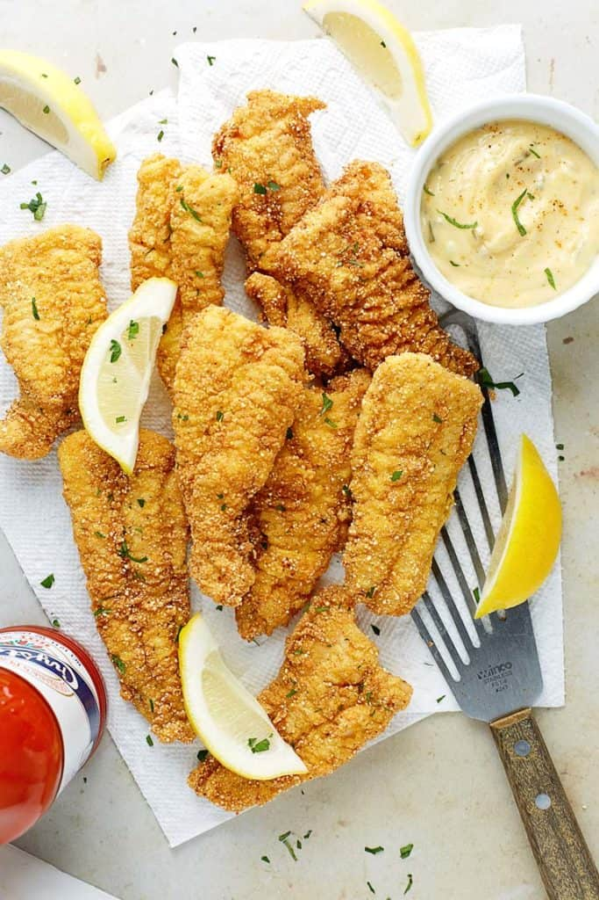

Cilantro and Ranch Dip

Description
What to do with you weekend catch, fry that sucker up
Ingredients
- 6 catfish fillets
- 1 package of Lousiana Seasoning(Blue Pack)
- 4 cup vegetable oil
Steps
- season catfish filets and let sit for 30 minutes
- Heat oil to 350 degrees
- Cook filets 2 at a time until filet floats for 1 minute
Back to Home